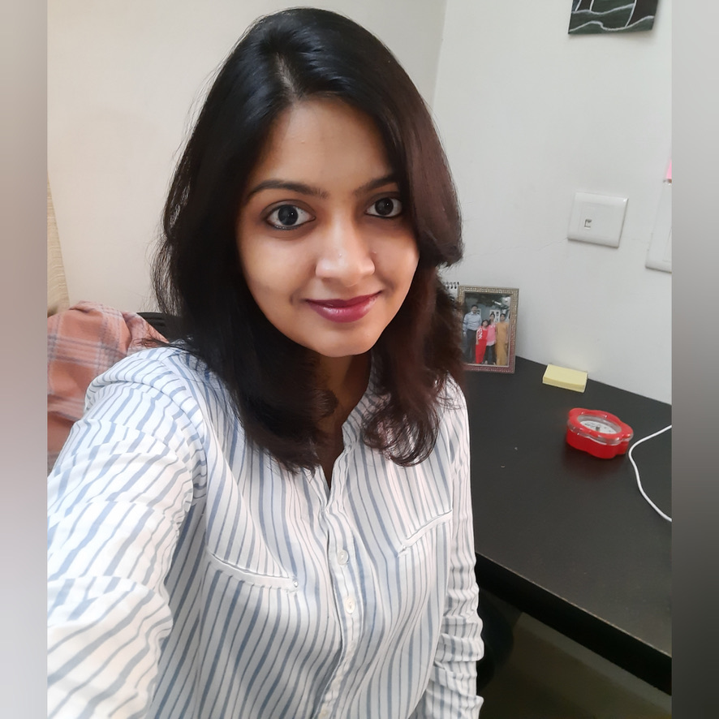

|  |
Navya Sree Pinjala VenkateswararaoComputer Engineering Graduate student at San Jose State University |
Domain Areas:Machine Learning, Data mining
Web development: HTML, React JS, CSS
Databases: MySQL
Tools , Technologies and Frameworks: Git, Pandas, NumPy, PyTorch, Seaborn, Scikit-learn, TensorFlow, PyCharm,Matlab, Jupyter Notebook, VSCode
Certifications: Python Data Structures and Algorithms, SQL Essential Training - Linkedin Learning
Identify Bird call in soundscapes, BirdCLEF 2022, Kaggle Competition, Jan 2022 - Present
Developing a model to analyze continuous and lengthy audio data and then identify species acoustically. The librosa
package is used to convert audio data to spectrogram. The spectrogram is smoothed out with PCEN, and peaks are
extracted. The ResNet model is applied and it achieves a 60% accuracy rate.
React based web music App., San Jose State University, Jan 2022 - Present
Developed a single page React web app using Cassandra database.
Utilized YouTube Data V3 API and react- YouTube npm to fetch search results and to retrieve, insert, update, and
delete resources. Interfaced the Cassandra database server with a web client with cassandra.mapping. Mapper from
cassandra-drive. React was leveraged in front end.
Automatic detection and segmentation of Retinal images, Diabetic Retinopathy,
Chettinad Hospitals, Jul 2020 - Dec 2020
Created an ML model to detect time period and severity of problem from images of retina and can help physicians to
treat patients efficiently. Utilized CNN algorithm and applied in treatment of Diabetic retinopathy patients at Chennai
resulting with an accuracy of 93.5%.
Incorporated Augmentation and increased accuracy. Tensorflow was utilized to build model.
Smart garbage monitoring system for corporations, VIT University, Jan 2020 - May 2020
Built a robotic vehicle acting as a garbage truck, operated from a remote location using Raspberry Pi with Python.
Developed smart bins with level sensors and servo motors. Cooperated in creating a server with AWS - Django
framework facilitating bins to be accessed from waste management authority’s office.